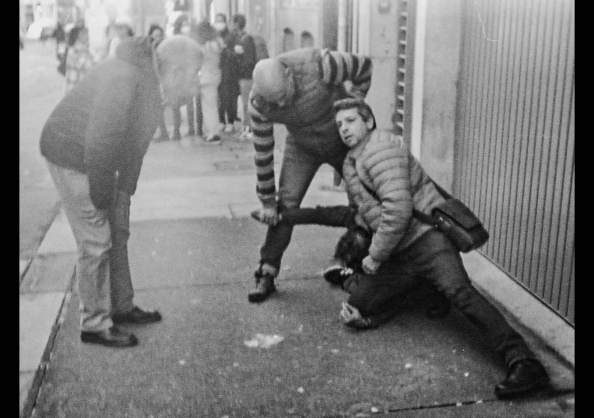
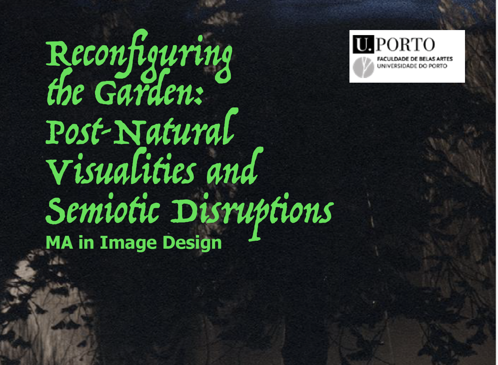
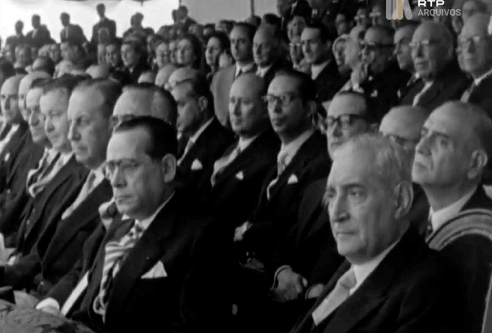
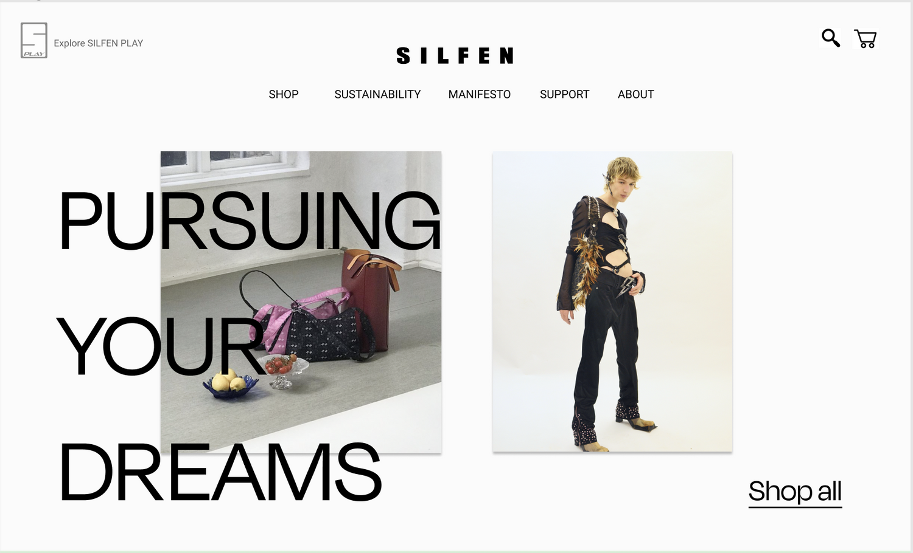
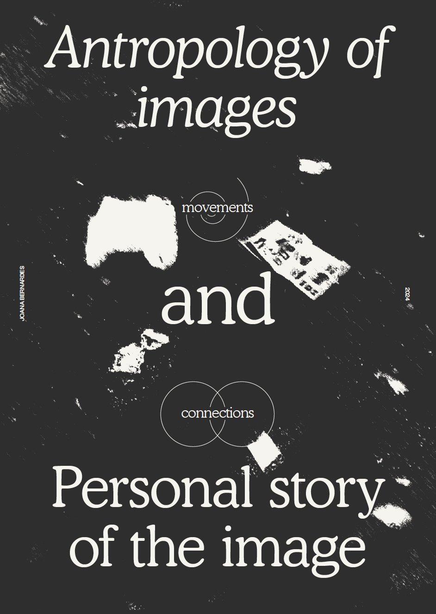

01
Sequência Fotográfica do Bonfim
Fotografia, caminhada e observação urbana.
2024Identidade visual · editorial · web · cultura da imagem

Fotografia, caminhada e observação urbana.
2024
Identidade visual, website e design editorial.
2022 — presente
Investigação, teoria da imagem e experimentação visual.
2022 — 2025
Imagem em movimento, media interativos e performance.
2023
Sistema de identidade e direção digital.
2024
Investigação editorial e ensaio visual.
2024Jo Bernardes é designer no Porto, trabalhando entre identidade visual, design editorial, web, projetos culturais e produção de imagem.
Trabalhar comigo →